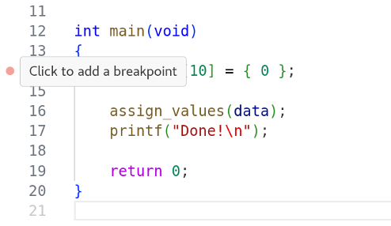
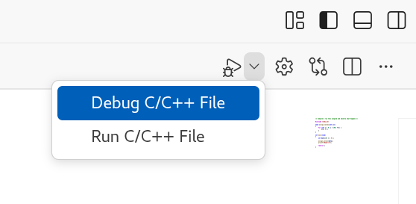

For this task, we will return to the crashing C program from Task 1 of Session 1. We will try debugging this program in VS Code.
[!NOTE] Make sure you’ve installed the C/C++ Extension Pack into VS Code before you begin this task!
Open crash.c in the VS Code editor. Hover the cursor
over the left margin, to the left of the line numbers. You should see a
pink dot appear, which tracks the movement of the cursor.

Click on the dot when you are on line 14. It should become red and stay fixed to that line. This marks a breakpoint. Click on it again to remove it, then click once more to reestablish the breakpoint.
Choose Debug C/C++ File from the dropdown menu beside the Run/Debug button, at the top-right of the VS Code UI.
